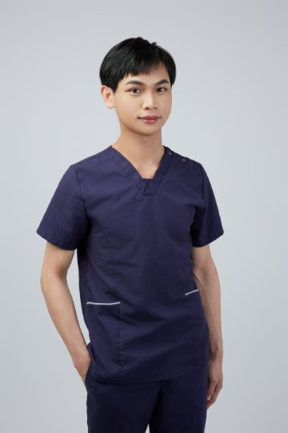

ABOUT・關於
關於 Sky

「治療不只是解除疼痛，
而是陪身體想起它原本的樣子。」
我是 Sky，一名物理治療師，工作的重心放在三鐵與耐力運動的身體。我做的事橫跨兩邊——
先撐住的那一邊
紅繩懸吊
動作控制與深層穩定
動作控制與深層穩定
同一個身體
再鬆開的那一邊
筋膜與顱薦椎
徒手的輕與慢
徒手的輕與慢
做得越久越確定——它們其實是同一件事：先被撐住，身體才鬆得開。
治療師的手
×
設計者的眼睛
治療室之外，我也以數位科技開發與健康品牌顧問的身分，協助健康產業「把專業說成人話」。
MY PHILOSOPHY・身體先說的話
身體很少突然壞掉。游、騎、跑輪流上場，它卻只有一副——換氣偏向的那一邊、踩起來不順的那隻腳，都是它在說話。我在紅繩上先把支撐還給它，讓身體不必每次都得用痛，才把話說完。
WHAT I SEE・我常遇到的身體
三鐵與耐力運動的身體來找我的時候，位置其實很固定——因為游、騎、跑輪流上場，承受的是同一副身體。
HOW I WORK・我手上的工具
工具沒有高下，只有適不適合現在的身體。多數時候我會照這個順序想：先讓它有支撐，再讓它鬆開，最後把改變留下來。
ROLES・現職
- 連邦物理治療所 物理治療師
- 數位科技開發 / 健康品牌顧問
EDUCATION・學歷
- 仁德醫專物理治療學系
EXPERIENCE・過往經歷
- 領航物理治療所 營運長
- 晉熯脊骨物理治療所 物理治療師
- 禾悅物理治療所 物理治療師
- 聖和骨外科診所 物理治療師
- 聯志骨科診所 物理治療師
- 興盛復健科診所 物理治療師
SPECIALTY・專長領域
- 紅繩懸吊系統
- 三鐵運動修復
- 徒手治療與疼痛治療：
肌筋膜、關節鬆動、疼痛科學 - 顳顎關節治療：
張口障礙、咬合不正 - 各式運動貼紮：
肌貼、動態貼布、雷可貼布 - 肌筋膜鬆動和強化：
筋膜刀放鬆 & 筋膜鏈訓練 - 運動傷害物理治療：
公路車專項 - AI 科學化數據評估：
Vald DynaMo
CERTIFICATION・相關證照
- 國家高考合格物理治療師
- 國際認證紅繩 Redcord
- 國際認證高級肌筋膜技術 AMT
- 國際認證動態貼布 Dynamic Tape
- 國際認證洛克貼——筋膜刀 & 軟拔罐
- 國際認證巫毒帶 Easy Flossband
- 國際保健協會工具式軟組織保健技術員
- 社團法人肌內效協會貼紮認證
- 社團法人台灣運動保健協會運動按摩技術員
- 初級緊急救護技術員 EMT-1
想知道物理治療師的執照與訓練是怎麼一回事、挑治療師該看哪些條件？我把這些整理在物理治療完整指南。